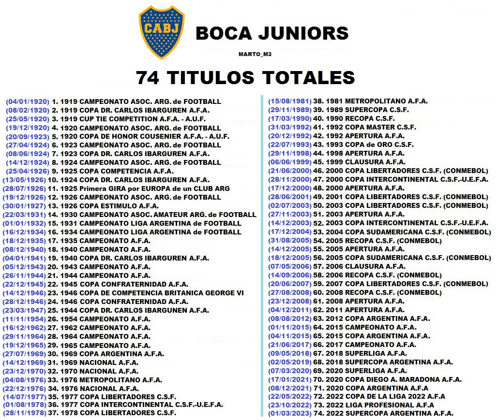

Titulos
Titulos totales
La historia del Club Atlético Boca Juniors transcurre desde 1905 siendo el fútbol desde los comienzos la esencia del club y, aunque posteriormente el crecimiento de la institución promovió el desarrollo de otras actividades como las bochas o el básquet, aquel permaneció como la disciplina deportiva sobre la cual se sustenta la entidad y la que le valió su reconocimiento a nivel nacional e internacional. Boca Juniors, con 74 títulos, es el equipo con mayor cantidad de títulos oficiales en la historia del fútbol argentino. En el plano internacional es la tercera institución con mayor cantidad de copas en el mundo a nivel confederativo e interconfederativo (18) y la primera en el continente americano, empatando con Independiente de Argentina. A nivel local cuenta con 35 campeonatos de primera división (29 de la era profesional y 6 de la era amateur) y también con 17 copas nacionales, siendo de nuevo el equipo más ganador en la historia.